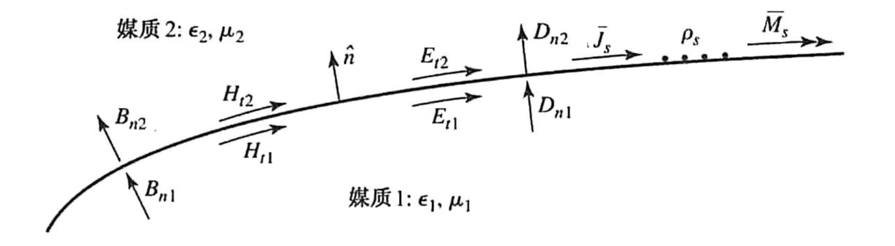
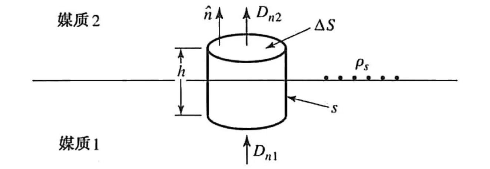
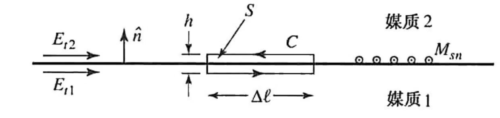
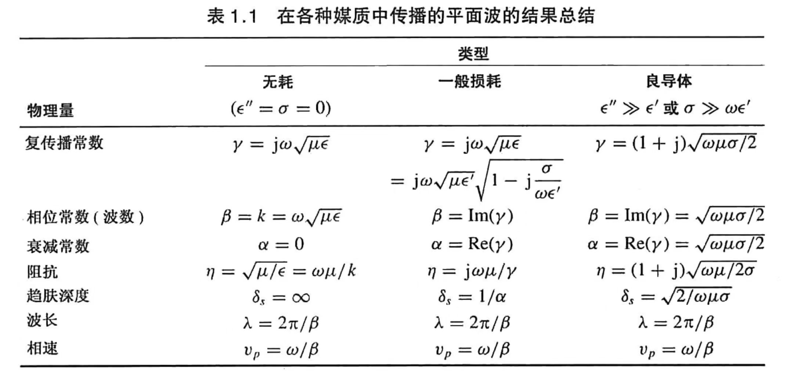

微波工程 第 1 章
麦克斯韦方程组
结构如下：
- 数学基础
- 物理形式
\(\rm nabla\)算子
\[ \nabla = \hat x\frac{\partial}{\partial x} + \hat y\frac{\partial}{\partial y} + \hat z\frac{\partial}{\partial z}\tag{0.0.0} \]
在此基础上有点乘和叉乘两种形式的运算：
\[ \begin{aligned} \nabla\cdot\mathcal{\vec D} &= (\hat x\frac{\partial}{\partial x} + \hat y\frac{\partial}{\partial y} + \hat z\frac{\partial}{\partial z})\cdot(\hat x\mathcal{D_x} + \hat y\mathcal{D_y} + \hat z\mathcal{D_z}) \\ \nabla\times\mathcal{\vec E} &= \begin{vmatrix} \hat x &\hat y &\hat z\\ \frac{\partial}{\partial x} &\frac{\partial}{\partial y} &\frac{\partial}{\partial z}\\ \mathcal E_x &\mathcal E_y &\mathcal E_z \end{vmatrix}= \hat x(\frac{\partial \mathcal E_z}{\partial y} - \frac{\partial \mathcal E_y}{\partial z}) + \hat y(\frac{\partial \mathcal E_x}{\partial z} - \frac{\partial \mathcal E_z}{\partial x}) + \hat z(\frac{\partial \mathcal E_y}{\partial x} - \frac{\partial \mathcal E_x}{\partial y}) \end{aligned}\tag{0.0.1-2} \]
散度定理（面积分 -> 体积分）
\[ \oint_S \vec A\cdot\mathrm d\vec S=\int_V (∇\cdot \vec A)\,\mathrm dV\tag{0.0.3} \]
矢量场 \(\vec A\) 穿过封闭曲面 \(S\) 的总通量，等于其散度在体积 \(V\) 内的积分。
对于电场有 ：
\[ \frac {Q_{enc}}{\epsilon_0}=\oint_S \vec {\mathcal E} \cdot\mathrm d\vec S=\int_V (∇\cdot \vec {\mathcal E})\,\mathrm dV\tag{0.0.4} \]
对于磁场有：
\[ 0=\oint_S \vec {\mathcal B}\cdot\mathrm d\vec S=\int_V (∇\cdot \vec {\mathcal B})\,\mathrm dV\tag{0.0.5} \]
旋度定理 （线积分 -> 面积分）
\[ \oint_C \vec A\cdot\mathrm d\vec l=\int_S (∇\times \vec A)\cdot\mathrm d\vec S\tag{0.0.6} \]
矢量场 \(\vec A\) 沿闭合回路 \(C\) 的环流，等于其旋度穿过以 \(C\) 为边界的曲面 \(S\) 的通量。
磁流密度和电通量?
对于电场有：
\[ \oint_C \vec{\mathcal E}\cdot\mathrm d\vec l=−\frac{\mathrm d}{\mathrm dt}\int_S \vec{\mathcal B}\cdot\mathrm d\vec s\tag{0.0.7} - \int_S\vec{\mathcal M}\cdot\mathrm d\vec s \]
当没有 \(\vec{\mathcal M}\) 项时，描述的是法拉第电磁感应定律，是基尔霍夫电压定律的基础（直流状态下恒等于 \(0\)）。
对于磁场有：
\[ \oint_C\vec{\mathcal H}\cdot\mathrm d\vec l=I+\epsilon_0\frac{\mathrm d}{\mathrm d t}\int_S\vec{\mathcal E}\cdot\mathrm d\vec S\tag{0.0.8} \]
描述的是电流 \(I\) 或变化的电通量，会在周围产生涡旋状的磁场。
混合积
\[ \begin{aligned} (\vec A\times\vec B)\cdot\vec C &= (\vec B\times\vec C)\cdot\vec A=(\vec C\times\vec A)\cdot\vec B \\ \vec A\cdot(\vec B\times\vec C) &= \vec B\cdot(\vec C\times\vec A)=\vec C\cdot(\vec A\times\vec B) \end{aligned}\tag{0.0.9} \]
对于旋度场的散度有：
\[ \nabla\cdot(\nabla\times\vec A)=\vec A\cdot(\nabla\times\nabla)=0\tag{0.0.10} \]
即旋度场的散度为零。
微分时变形式
\[ \begin{aligned} \nabla\times\mathcal{\vec E} &= \frac{-\partial\mathcal{\vec B}}{\partial t} - \mathcal{\vec M} \\ \nabla\times\mathcal{\vec H} &= \frac{\partial\mathcal{\vec D}}{\partial t} + \mathcal{\vec J}\\ \nabla\cdot\mathcal{\vec D} &= \rho\\ \nabla\cdot\mathcal{\vec B} &= 0 \end{aligned}\tag{0.1.0} \]
| 矢量 | 含义 | 单位 |
|---|---|---|
| \(\vec {\mathcal E}\) | 电场强度 | \(\rm V/m\) |
| \(\vec {\mathcal H}\) | 磁场强度 | \(\rm A/m\) |
| \(\vec {\mathcal D}\) | 电位移矢量 / 电通量密度 | \(\rm C/m^2\) |
| \(\vec {\mathcal B}\) | 磁感应强度 / 磁通量密度 | \(\rm Wb/m^2\) |
| \(\vec {\mathcal M}\) | 磁流密度（虚拟的） | \(\rm V/m^2\) |
| \(\vec {\mathcal J}\) | 电流密度 | \(\rm A/m^2\) |
| \(\rho\) | 电荷密度 | \(\rm C/m^3\) |
在真空总电场强度、磁场强度与其通量密度存在以下本构关系：
\[ \begin{aligned} \mathcal{\vec B} &= \mu_0\mathcal{\vec H}\\ \mathcal{\vec D} &= \epsilon_0\mathcal{\vec E} \end{aligned}\tag{0.1.1} \]
其中 \(\mu_0=4\pi\times10^{-7}\;\mathrm{H/m}\) 为真空磁导率， \(\epsilon_0=8.854\times10^{-12}\;\mathrm{F/m}\) 为真空介电常数。
电流连续性方程可由 \((0.1.0\;\rm b)\) 取散度得到：
\[ \begin{aligned} \nabla(\frac{\partial\mathcal{\vec D}}{\partial t} + \mathcal{\vec J})&=\nabla\cdot(\nabla\times\vec{\mathcal H})\\ &=0\\ &=\nabla\vec{\mathcal J} + \frac{\partial\nabla\vec{\mathcal D}}{\partial t}\\ &\Rightarrow\nabla\vec{\mathcal J} + \frac{\partial\rho}{\partial t} = 0 \end{aligned}\tag{0.1.2} \]
该公式同时说明位移电流密度 \(\partial\vec{\mathcal D}/\partial t\) 的必要性。
通过傅里叶变换可得到任意频率 \(\omega\) 下的麦克斯韦方程组：
\[ \begin{aligned} \nabla\times\vec E &= -j\omega\vec B - \vec M \\ \nabla\times\vec H &= j\omega\vec D + \vec J\\ \nabla\cdot\vec D &= \rho\\ \nabla\cdot\vec B &= 0 \end{aligned}\tag{0.1.3} \]
公式中提到的电流源 \(\vec {\mathcal J}\) 和磁流源 \(\vec{\mathcal M}\) 都是体流密度，在多数情况下是片状的、线状的或无限小的偶极子。这些分布总体可以通过 \(\delta\) 函数写成体流密度。
媒介中的场和边界条件
结构如下：
- 媒介中的场
- 媒介中的边界条件
媒质中的场
电场
对于电介质材料，外加电场 \(\vec{\mathcal E}\) 会使材料的原子]或分子产生极化，产生电偶极矩，增大了电通量密度（电位移矢量） \(\vec{\mathcal D}\) 。这个附加的极化矢量成为电极化强度 \(\vec{\mathcal P_e}\) ，有关系如下：
\[ \vec D = \epsilon_0\vec E+\vec{P_e}\tag{1.1.1} \]
在线性媒介中，电极化强度与外加电场成线性关系：
\[ \vec{P_e}=\epsilon_0\chi_e\vec E\tag{1.1.2} \]
其中 \(\chi_e\) 为电极化率(\(\rm susceptibility\))，有可能为复数。有：
\[ \begin{aligned} \vec D=\epsilon_0\vec E+\vec P_e=\epsilon_0(1+\chi_e)\vec E=\epsilon E \end{aligned}\tag{1.1.3} \]
其中 \(\epsilon = \epsilon^{\prime}-j\epsilon^{\prime\prime}=\epsilon_0(1+\chi_e)\) 为复介电常数。\(\epsilon\) 的实部表示储能能力，决定电容 \(C=\epsilon^\prime S/d\) ，其虚部被认为是电介质中由于偶极子振动阻尼产生的热损耗。真空中的 \(\epsilon\) 为实数，是无耗的。由于能量守恒，\(\epsilon\) 的虚部一定是负数( \(\epsilon ^{\prime\prime} > 0\) )。介电材料还可能考虑有一个等效的导体损耗。在电导率为 \(\sigma\) 的材料中，传到电流密度为：
\[ \vec J=\sigma\vec E\tag{1.1.4} \]
从电磁场（电路）的角度来看，这是欧姆定律。关于 \(\vec H\) 的旋度方程 \(\rm (0.1.3\,b)\) 有：
\[ \begin{aligned} \nabla\times\vec H&=j\omega\vec D + \vec J\\ &=j\omega\epsilon\vec E+\sigma \vec E\\ &=j\omega\epsilon^\prime\vec E+(\omega\epsilon^{\prime\prime}+\sigma)\vec E\\ &=j\omega(\epsilon-j\epsilon^{\prime\prime}-j\frac{\sigma}{\omega})\vec E \end{aligned} \]
由此可以可以看出有介电阻尼 ( \(\omega\epsilon^{\prime\prime}\) ) 和导电损耗 ( \(\sigma\) ) 两种形式的能量损耗。 \(\omega\epsilon^{\prime\prime}+\sigma\) 可以看作是总的有效电导率，并定义损耗角正切为：
\[ \tan\delta=\frac{\omega\epsilon^{\prime\prime}+\sigma}{\omega\epsilon^{\prime}}\tag{1.1.5} \]
微波材料总是使用介电常数 \(\epsilon^\prime=\epsilon_r\epsilon_0\) 和一定频率下的损耗角正切表征的。得到无耗的条件下的解，可以用复数
\[ \epsilon=\epsilon^\prime-j\epsilon^{\prime\prime}=\epsilon^\prime(1-j\tan\delta)=\epsilon_r\epsilon_0(1-j\tan\delta)\tag{1.1.6} \]
取代实数 \(\epsilon\) 来引进损耗条件的解。
对于各项异性矢量，有：
\[ \begin{bmatrix} D_x\\ D_y\\ D_z \end{bmatrix} = \begin{bmatrix} \epsilon_{xx}&\epsilon_{xy}&\epsilon_{xz}\\ \epsilon_{yx}&\epsilon_{yy}&\epsilon_{yz}\\ \epsilon_{zx}&\epsilon_{zy}&\epsilon_{zz}\\ \end{bmatrix} \begin{bmatrix} E_x\\ E_y\\ E_z \end{bmatrix}= \begin{bmatrix}\epsilon \end{bmatrix}\begin{bmatrix} E_x\\ E_y\\ E_z \end{bmatrix}\tag{1.1.7} \]
磁场
与电场类似，在外加磁场的作用下，磁材料的磁偶极子有序排列，产生磁极化矢量 \(\vec P_m\) ，有：
\[ \vec B = \mu_0(\vec H+\vec P_m)\tag{1.1.8} \]
对于线性材料， \(\vec P_m\) 与 \(\vec H\) 线性相关，有：
\[ \vec P_m=\chi_m\vec H\tag{1.1.9} \]
其中， \(\chi_m\) 为复数的磁极化率，由 \(\rm (1.1.8)\) 和 \(\rm (1.1.9)\) 得到：
\[ \vec B=\mu_0(1+\chi_m)\vec H=\mu\vec H\tag{1.1.10} \]
其中 \(\mu=\mu_0(1+\chi_m)=\mu^\prime-j\mu^{\prime\prime}\) 为媒质的磁导率。同样的，\(\chi_m\) 或 \(\mu\) 的虚部认为是阻尼力引起的损耗。由于不存在实际磁流，故不考虑磁导率。考虑各向异性，张量磁导率可以写作：
\[ \begin{bmatrix} B_x\\ B_y\\ B_z \end{bmatrix}= \begin{bmatrix} \mu_{xx}&\mu_{xy}&\mu_{xz}\\ \mu_{yx}&\mu_{yy}&\mu_{yz}\\ \mu_{zx}&\mu_{zy}&\mu_{zz}\\ \end{bmatrix}\begin{bmatrix} H_x\\ H_y\\ H_z \end{bmatrix}= \begin{bmatrix}\mu\end{bmatrix}\begin{bmatrix} H_x\\ H_y\\ H_z \end{bmatrix}\tag{1.1.11} \]
线性媒质
线性媒质，是电磁理论的理想化模型，其核心特征是：
- 比例性：\(D\propto E\) ，比例系数（ \(\epsilon\) ）与场强无关；
- 可叠加性：多信号共存时不产生互调产物，频域方法有效；
- 互易性： 对于满足各向异性的材料，存在 \(\mathrm S_{ij}=\mathrm S_{ji}\) ，传输特性与方向无关。
在高功率/高场强或非线性器件中才考虑非线性性。
在线性媒介中，麦克斯韦方程组可写为：
\[ \begin{aligned} \nabla\times\vec E &= -j\omega\mu\vec H - \vec M \\ \nabla\times\vec H &= -j\omega\epsilon\vec E + \vec J\\ \nabla\cdot\vec E &= \frac\rho\epsilon\\ \nabla\cdot\vec H &= 0 \end{aligned}\tag{1.1.12} \]
本构关系为：
\[ \begin{aligned} \vec D&=\epsilon\vec E\\ \vec B&=\mu\vec H \end{aligned}\tag{1.1.13} \]
分界面上的场
法向


对于封闭的圆柱表面有：
\[ \oint_S\vec D\cdot\mathrm d\vec s=\int_V\rho\,\mathrm d v\tag{1.2.1} \]
在 \(\lim h\rightarrow 0\) ， 边壁没有贡献，上式退化为：
\[ \begin{aligned} \Delta S\,D_{n2}-\Delta S\,D_{n1}&=\Delta S\rho_s\\ D_{n2}-D_{n1}&=\rho_s \end{aligned}\tag{1.2.2} \]
写作矢量形式：
\[ \hat n\cdot(\vec D_2-\vec D_1)=\rho_s \tag{1.2.3} \]
对于磁场类似的有：
\[ \hat n\cdot(\vec B_2-\vec B_1)=0\tag{1.2.4} \]
切向

对于电场的切向分量，用 \(\text{(0.0.7)}\) 的向量形式：
\[ \oint_C \vec{\mathcal E}\cdot\mathrm d\vec l=−j\omega\int_S \vec{\mathcal B}\cdot\mathrm d\vec s - \int_S\vec{\mathcal M}\cdot\mathrm d\vec s\tag{1.2.5} \]
几个角度：
在 \(\lim h\rightarrow 0\) ，\(\vec B\) 的面积分趋近于零。若此时分界面上存在表面磁流密度 \(\vec M_S\) ，则 \(\vec M\) 的表面积分可能非零。可由狄拉克( \(\rm Dirac\) ) \(\delta\) 函数写出：
\[ \vec M=\vec M_S\,\delta(h)\tag{1.2.6} \]
其中 \(h\) 是法向上的坐标，则由 \(\text{1.2.4}\) 得到：
\[ \begin{aligned} \Delta \mathscr l\,E_{t1}-\Delta\mathscr l\,E_{t2}&=-\Delta\mathscr lM_S\\ \Rightarrow E_{t1}-E_{t2}&=-M_S \end{aligned}\tag{1.2.7} \]
将上式推广为矢量得到：
\[ (\vec E_2-\vec E_1)\times\hat n=\vec M_S\tag{1.2.8} \]
对于磁场类似的有：
\[ \hat n\times(\vec H_2-\vec H_1)=\vec J_S\tag{1.2.9} \]
在两种无耗介电材料的分界面上，通常没有电荷或面电流密度、磁流密度的存在，这样 \(\text{(1.2.3)}\) 、 \(\text{(1.2.4)}\) 、 \(\text{(1.2.8)}\) 和 \(\text{(1.2.9)}\) 可以简化为：
\[ \begin{aligned} \hat n\cdot\vec D_1&=\hat n\cdot\vec D_2\\ \hat n\cdot\vec B_1&=\hat n\cdot\vec B_2\\ \hat n\times\vec E_1&=\hat n\times\vec E_2\\ \hat n\times\vec H_1&=\hat n\times\vec H_2\\ \end{aligned}\tag{1.2.10} \]
即在穿过分界面时 \(\vec D\) 和 \(\vec B\) 的法向量连续，而 \(\vec E\) 和 \(\vec H\) 的切向分量连续。
麦克斯韦方程组不都是线性无关的，所以包含在上述方程中的六个边界条件也不都是线性无关的？
若使四个切向场分量的边界条件 \(\text{1.2.10 c}\) 和 \(\text{1.2.10 d}\) 强制满足的话，则将自动是法向分量的连续防尘也得到满足？
电壁边界条件
对于良导体边界，假定其为无耗条件（ \(\sigma\rightarrow\infty\) ）。在理想条件下，导体内部的场分量必定为零。可以看作是导体具有有限电导率（ \(\sigma<\infty\) ），且当 \(\sigma\rightarrow\infty\) 时趋肤深度区域零的情形。这里假定 \(\vec M_S=0\) 对应于理想导体充满边界一方的情况。 这样 \(\text{(1.2.3)}\) 、 \(\text{(1.2.4)}\) 、 \(\text{(1.2.8)}\) 和 \(\text{(1.2.9)}\) 可以简化为：
\[ \begin{aligned} \hat n\cdot\vec D&=\rho_s\\ \hat n\cdot\vec B&=0\\ \hat n\times\vec E&=0\\ \hat n\times\vec H&=\vec J_S \end{aligned}\tag{1.2.11} \]
其中 \(\rho_s\) 和 \(\vec J_s\) 是分界面上的表面电荷密度和表面电流密度， \(\hat n\) 为指向理想导体外的法向单位矢量。由 \(\text{(1.2.11 c)}\) 可以看出，电场 \(\vec E\) 的切向分量是被“短路的”，它在导体的表面必定为零。
磁壁边界条件
与电壁边界条件对偶的是磁壁边界条件，其中 \(\vec H\) 的切向分量必须为零。这是一个理想状态的边界条件，可以用波纹表面来近似，或者在某些平面传输线问题中用其近似。一般而言， \(\hat n\times \vec H=0\) 的理想情况常常是一中简化。
磁壁边界条件类似于终端开路传输线的电流电压关系，电壁边界条件类似终端短路传输线的电流电压关系。
\[ \begin{aligned} \hat n\cdot\vec D&=0 \\ \hat n\cdot\vec B&=0 \\ \hat n\times\vec E&=-\vec M_S \\ \hat n\times\vec H&=0 \end{aligned}\tag{1.2.12} \]
辐射条件
处理一个或多个既有无限大边界的问题时，必须强加上场在无限远出的条件。从根本上说，辐射条件是能量守恒的一种表述。具体为：距离源无限远处，场要么为零，要么朝外传播。
波方程和基本平面波的解
亥姆霍兹方程
在无源、线性、各向同性和均匀的区域，向量形式的麦克斯韦方程为：
\[ \begin{aligned} \nabla\times\vec E&=-j\omega\mu\vec H\\ \nabla\times\vec H&=j\omega\epsilon\vec E \end{aligned}\tag{2.1.1 } \]
方程仅包含两个未知量 \(\vec E\) 以及 \(\vec H\) ，因此可以用以求解 \(\vec E\) 和 \(\vec H\) 。对 \(\text{(2.1.1 a)}\) 取旋度有：
\[ \begin{aligned} \nabla\times\nabla\times\vec E &= -j\omega\mu\nabla\times\vec H\\ &=(-j\omega\mu)(j\omega\epsilon\vec E)=\omega^2\mu\epsilon\vec E\\ \Rightarrow\nabla\times\nabla\times\vec E &=\omega^2\mu\epsilon\vec E \end{aligned} \]
在矢量恒等式 \(\nabla\times\nabla\times\vec A=\nabla(\nabla\cdot\vec A)-\nabla^2\vec A\) 下有：
\[ \nabla^2\vec E+\omega^2\mu\epsilon\vec E=0\tag{2.1.2} \]
同理对于 \(\vec H\) 有：
\[ \nabla^2\vec H+\omega\mu\epsilon\vec H=0\tag{2.1.3} \]
常数 \(k=\omega\sqrt{\mu\epsilon}\) 是确定的，成为媒介的波数，或传播常数，单位为 \(\rm 1/m\) 。
无耗媒介中的平面波
在无耗媒介中， \(\mu\) 和 \(\epsilon\) 都是实数，故 \(k\) 也是实数。上述波方程的一个平面波的基本解可以通过一个只有 \(\hat x\) 分量而且在 \(x\) 和 \(y\) 方向均匀（不变）的电场得到。由于 \(\partial/\partial x = \partial/\partial y=0\) ，于是亥姆霍兹仿真可以简化为：
\[ \frac{\partial ^2E_x}{\partial z^2}+k^2E_x=0\tag{2.2.1} \]
容易得到时谐形式：
\[ E_x(z)=E^+e^{-jkz}+E^-e^{jkz}\tag{2.2.2} \]
在时域中可以写为：
\[ \mathcal E_x(z,t)=E^+\cos(\omega t-kz)+E^-\cos(\omega t+kz)\tag{2.2.3} \]
假定 \(E^+\) 和 \(E^-\) 为实常数。考虑 \(\text{(2.1.6)}\) 第一项，这一项表示波沿 \(+z\) 方向传播。根据波的传播性质，对于一个等相位面，在其传播路径中保持相位不变。故有 \(\omega t-kz=\varphi\) , 当时间增加时，这个相位沿着 \(+z\) 方向移动。故称波的传播速度为相速：
\[ v_p=\frac{\mathrm dz}{\mathrm dt}=\frac {\mathrm d}{\mathrm dt}\left(\frac{\omega t-\varphi}{k}\right)=\frac \omega k=\frac 1{\sqrt{\mu\epsilon}}\tag{2.2.4} \]
在真空中有 \(v_p=1/\sqrt{\mu_0\epsilon_0}=c=2.998\times 10^8 \;\rm m /s\) 。
定义波长为在确定时刻两个相邻极大值之间的距离，有：
\[ \left[\omega t-kz\right]-[\omega t-k(z+\lambda)]=2\pi \]
故：
\[ \lambda=\frac{2\pi}k=\frac{2\pi}{\omega\sqrt{\mu\epsilon}}=\frac{2\pi v_p}{\omega}=\frac{v_p}f\tag{2.2.5} \]
电磁场的平面波定义包含磁场，同理可得磁场 \(H_x=H_z=0\) ，有：
\[ H_y=\frac 1\eta[E^+e^{-jkz}-E^-e^{jkz}]\tag{2.2.6} \]
其中，\(\eta=\omega\mu/k=\sqrt{\mu/\epsilon}\) 为平面波的波阻抗，定义为 \(\vec E\) 与 \(\vec H\) 的比值。在真空中有 \(\eta_0=\sqrt{\mu_0/\epsilon_0}=377\Omega\)。
一般有耗媒介中的平面波
考虑有耗媒介的影响，若媒介导电，且电导率为 \(\sigma\) , 则麦克斯韦旋度方程有：
\[ \begin{aligned} \nabla\times\vec E=&-j\omega\mu\vec H\\ \nabla\times\vec H=&j\omega\epsilon\vec E+\sigma\vec E \end{aligned}\tag{2.2.7} \]
波动方程可写为：
\[ \nabla^2\vec E+\omega^2\mu\epsilon\left(1-j\frac{\sigma}{\omega\epsilon}\right)\vec E=0\tag{2.2.8} \]
与无耗情况类似，式 \(\text{(2.1.2)}\) 中的波数 \(k^2=\omega^2\mu\epsilon\) 变为 \(\omega^2\mu\epsilon(1-j\frac{\sigma}{\omega\epsilon})\) 。定义该媒介的复传播常数为
\[ \gamma=\alpha+j\beta=j\omega\sqrt{\mu\epsilon}\sqrt{1-j\frac{\sigma}{\omega\epsilon}}\tag{2.2.9} \]
再次假定电场仅存在 \(\hat x\) 分量，且在 \(x\) 和 \(y\) 方向上是均匀不变的，则 \(\text{(2.2.8)}\) 可以简化为：
\[ \frac{\partial^2E_x}{\partial z^2}-\gamma^2E_x=0\tag{2.2.10} \]
解为：
\[ E_x(z)=E^+e^{-\gamma z}+E^-e^{\gamma z}\tag{2.2.11} \]
正向传播因数形如：
\[ e^{-\gamma z}=e^{-\alpha z}e^{-j\beta z} \]
其时域形式：
\[ e^{-\alpha z}\cos(\omega t-\beta z) \]
其相速为 \(v_p=\omega/\beta\) ，波长为 \(\lambda=2\pi/\beta\) ，其衰减因子为 \(\alpha\) 。若不考虑损耗 \(\sigma\) ，则有 \(\gamma=jk\) ， \(\alpha = 0\) ， \(\beta = k\) 。
同时，损耗也可以处理为复介电常数，有：
\[ \gamma=j\omega\sqrt{\mu\epsilon}=jk=j\omega\sqrt{\mu\epsilon^\prime(1-j\tan\delta)}\tag{2.2.12} \]
因此相关磁场有：
\[ H_y=\frac{j}{\omega\mu}\frac{\partial E_x}{\partial z}=\frac{-j\gamma}{\omega\mu}(E^+e^{-\gamma z}-E^-e^{\gamma z})\tag{2.2.13} \]
在无耗情况下，波阻抗可以定义为电场与磁场的比值：
\[ \eta=\frac{j\omega\mu}{\gamma}\tag{2.2.14} \]
有复数的 \(\eta\) ：
\[ H_y=\frac 1\eta(E^+e^{-jkz}-E^-e^{jkz})\tag{2.2.15} \]
注意到当 \(\gamma=jk=j\omega\sqrt{\mu\epsilon}\) 是，化简为无耗情况下的 \(\eta=\sqrt{\mu/\epsilon}\) 。
良导体中的平面波
良导体是导电电流远大于位移电流的一种特殊情况，即 \(\sigma\gg\omega\epsilon\) 。在条件 \(\epsilon^{\prime\prime}\gg\epsilon^\prime\) 下，宁可采用复电导率。忽略位移电流项， \(\text{(2.2.9)}\) 可适当近似为 ：
\[ \gamma=\alpha+j\beta\approx j\omega\sqrt{\mu\epsilon}\sqrt{\frac{\sigma}{j\omega\epsilon}}=(1+j)\sqrt{\frac{\omega\mu\sigma}2}\tag{2.2.16} \]
定义趋肤深度（穿透的特征深度）为：
\[ \delta_s=\frac1\alpha=\sqrt{\frac 2{\omega\mu\sigma}}\tag{2.2.17} \]
对于导体中的场，在其传输一个趋肤深度后，其振幅衰减为 \(1/e\)，即 \(36.8\%\) 。
良导体内的波阻抗可以由 \(\text{(2.2.14)}\) 和 \(\text{(2.2.16)}\) 得到，其结果为：
\[ \eta=\frac{j\omega\mu}{\gamma}\approx(1+j)\sqrt{\frac{\omega\mu}{2\sigma}}=(1+j)\frac1{\sigma\delta_s} \]
这一阻抗的相位角为 \(45^\circ\) 是良导体的特征。无耗材料的相位角为 \(0^\circ\)，而任意有耗媒质的阻抗的相位角在 \(0^\circ\) 到 \(45^\circ\) 之间。

平面波的通解
在真空中，电场 \(\vec E\) 的亥姆霍兹方程可以写作：
\[ \nabla^2\vec E+k_0^2\vec E=\frac{\partial^2\vec E}{\partial x^2}+\frac{\partial^2\vec E}{\partial y^2}+\frac{\partial^2\vec E}{\partial z^2}+k_0^2\vec E=0\tag{3.1.1} \]
这个矢量波方程对于 \(\vec E\) 的每个直角分量都是正确的：
\[ \begin{aligned} \nabla^2(\hat xE_x+\hat yE_y+\hat zE_z)+k_0^2(\hat xE_x+\hat yE_y+\hat zE_z)&=0\\ \hat x(\nabla^2E_x+k_0^2E_x)+\hat y(\nabla^2E_y+k_0^2E_y)+\hat z(\nabla^2E_z+k_0^2E_z)&=0 \end{aligned}\\ \]
\[ \Rightarrow\frac{\partial^2E_i}{\partial x^2}+\frac{\partial^2E_i}{\partial y^2}+\frac{\partial^2E_i}{\partial z^2}+k_0^2E_i=0\tag{3.1.2} \]
考虑使用分离变量法求解方程，首先认为其解可以写为三个函数的乘积，而每个函数分别与三个坐标中的一个有关系：
\[ E_x(x, y, z)=f(x)g(y)h(z)\tag{3.1.3} \]
将这种形式的解带入 \(\text{(3.1.2)}\) ，并除以 \(fgh\) 得到：
\[ \frac{f^{\prime\prime}}f+\frac{g^{\prime\prime}}g+\frac{h^{\prime\prime}}h+k_0^2=0\tag{3.1.4} \]
现在三个函数相互独立，定义三个分离的常数 \(k_x,k_y,k_z\) 使得：
\[ f^{\prime\prime}/f=-k_x^2\qquad g^{\prime\prime}/g=-k_y^2\qquad h^{\prime\prime}/h=-k_z^2\tag{3.1.5} \\ \]
或：
\[ \frac{\mathrm d^2 f}{\mathrm dx^2}+k_x^2f=0\quad \frac{\mathrm d^2 g}{\mathrm dy^2}+k_y^2f=0\quad \frac{\mathrm d^2 h}{\mathrm dz^2}+k_z^2f=0\tag{3.1.6} \]
联立 \(\text{(3.1.5)}\) 和 \(\text{(3.1.6)}\) 得：
\[ k_x^2+k_y^2+k_z^2=k_0^2\tag{3.1.7} \]
各个分量的解都可以写作 \(e^{\pm jk_ii}\) 的形式。对于沿每个坐标正向传播的平面波， \(E_x\) 的完整形式为：
\[ E_x(x, y, z)=Ae^{-j(k_xx+k_yy+k_zz)}\tag{3.1.8} \]
其中A是任意幅值的常数。定义波矢量 \(\vec k\) 为：
\[ \vec k=k_x\hat x+k_y\hat y+k_z\hat z=k_0\hat n\tag{3.1.9} \]
同时定义位置矢量：
\[ \vec r=x\hat x+y\hat y+z\hat z\tag{3.1.10} \]
式 \(\text{(3.1.8)}\) 可以写为：
\[ E_x(x, y, z)=Ae^{-j\vec k\cdot\vec r}\tag{3.1.11} \]
同理，\(E_y,\;E_z\) 有不同的振幅常数：
\[ \begin{aligned} E_y(x, y, z)&=Be^{-j\vec k\cdot\vec r}\\ E_z(x, y, z)&=Ce^{-j\vec k\cdot\vec r} \end{aligned}\tag{3.1.12} \]
\(\vec E\) 的三个分量对 \(x\)，\(y\)，\(z\) 的依赖关系是相同的，需满足散度条件：
\[ \nabla\cdot\vec E=\frac{\partial E_x}{\partial x}+\frac{\partial E_y}{\partial y}+\frac{\partial E_z}{\partial z}=0 \]
若 \(\vec E_0=A\hat x+B\hat y+C\hat z\) 则有 \(\vec E=\vec E_0e^{-j\vec k\cdot\vec r}\) 和
\[ \nabla\cdot\vec E=\nabla\cdot(\vec E_0e^{-j\vec k\cdot\vec r})=\vec E_0\cdot\nabla e^{-j\vec k\cdot\vec j}=-j\vec k\cdot\vec E_0e^{-j\vec k\cdot\vec r}=0 \]
因此，必须有：
\[ \vec k\cdot\vec E_0=0\tag{3.1.13} \]
即电场振幅矢量 \(\vec E_0\) 必须垂直于传播方向 \(\vec k\) 。这个条件是平面波的普通结果，意味着三个振幅常量 \(A,B,C\) 只有两个可以独立选择。
磁场由麦克斯韦方程组：
\[ \nabla\times\vec E=-j\omega\mu_0\vec H\tag{3.1.14} \]
带入 \(\vec E\) 的解，得到：
\[ \begin{aligned} \vec H&=\frac{j}{\omega\mu_0}\nabla\times\vec E=\frac{j}{\omega\mu_0}\nabla\times(\vec E_0e^{-j\vec k\cdot\vec r})\\ &=\frac{-j}{\omega\mu_0}\vec E_0\times\nabla e^{-j\vec k\cdot\vec r}\\ &=\frac{-j}{\omega\mu_0}\vec E_0\times(-j\vec k)e^{-j\vec k\cdot\vec r}\\ &=\frac{k_0}{\omega\mu_0}\hat n\times\vec E_0e^{-j\vec k\cdot\vec r}\\ &=\frac 1{\eta_0}\hat n\times\vec E_0e^{-j\vec k\cdot\vec r}\\ &=\frac 1{\eta_0}\hat n\times\vec E \end{aligned}\tag{3.1.15} \]